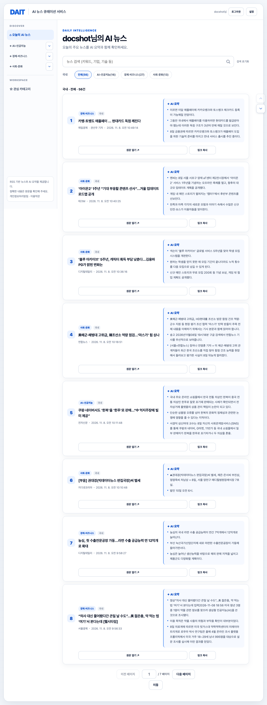

member · desktop

메인 뉴스 목록
GET /오늘의 AI 뉴스를 카드 목록으로 보여주는 메인 화면. 비회원은 최신 10건, 회원은 카테고리·관심사·검색·언어 필터와 페이지네이션을 사용한다. 각 카드에는 AI 3줄 요약, 출처, 발행 시각, 읽음 표시가 포함된다.
주요 기능
- 검색: 키워드·기업·기술 검색 + 검색 초기화, 결과 건수 표시
- 필터: 카테고리 칩(건수 배지), 하위 카테고리/관심사, 언어(한/영) 전환
- 페이지네이션: 이전/다음 + 페이지 번호 직접 이동, URL과 동기화
- 읽음 상태: 회원은 서버 read-state, 비회원은 localStorage 기록
사용 기술
HTML5 시맨틱
Vanilla JS 모듈
URLSearchParams + history.replaceState
AbortController (stale 요청 취소)
sessionStorage 피드 캐시
sticky controls / scroll buttons
연관 API
GET /v1/news
GET /v1/news/activity
GET /v1/news/read-state
PUT /v1/news/{id}/read
index.html · news-ui.js · app.js · header-search.js · sticky-controls.js · news-ui.css · local-design.css · local-app.css · mockup.css